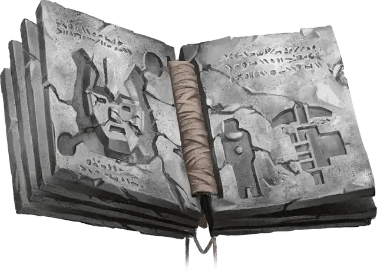

Справочник по големам
Manual of Golems
Чудесный предмет, очень редкий

Рекомендованная стоимость 40 000 ЗМ
В этом труде содержится информация и заклинания, необходимые для создания голема определённого типа. Мастер выбирает тип голема или определяет его случайным образом броском по следующей таблице. Чтобы расшифровать и использовать этот справочник, вы должны быть заклинателем и иметь по меньшей мере две ячейки заклинаний 5-го уровня. Существо, которое не может использовать Справочник по големам, при попытке его прочитать получает 6к6 Психического урона.
Для создания голема вы должны потратить указанное в таблице время, работая без перерывов, держа справочник в руках и отдыхая не более 8 часов в день. Кроме того, вы должны заплатить указанную стоимость за приобретаемые материалы.
Как только вы завершите создание голема, книга сгорает в магическом пламени; этим пеплом посыпают голема, и он оживает. Голем находится под вашим контролем и понимает и выполняет ваши приказы.
| 1к20 | Справочник | Голем | Время создания | Стоимость создания |
| 1–5 | Справочник по глиняным големам | Глиняный голем | 30 дней | 65 000 ЗМ |
| 6 | Справочник по железным големам | Железный голем | 120 дней | 100 000 ЗМ |
| 7-8 | Справочник по каменным големам | Каменный голем | 90 дней | 80 000 ЗМ |
| 9-20 | Справочник по мясным големам | Мясной голем | 60 дней | 50 000 ЗМ |